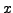

#include <gandalf/vision/mask1D.h>
#include <gandalf/vision/convolve1D.h>
This module deals with creating 1D convolution masks, used in Gandalf for
convolving an image with a separable filter,
which is a filter whose functional form can be factored into independent
one-dimensional filters in the  and
/* format of convolution mask */
typedef enum { GAN_MASK1D_SYMMETRIC, GAN_MASK1D_ANTISYMMETRIC,
GAN_MASK1D_GENERIC }
Gan_Mask1DFormat;
GAN_MASK1D_GENERIC should be used when the filter does not fit
one of the special types. The following code creates a symmetrical
convolution mask.
Gan_Mask1D *pMask;
/* create symmetric 1D convolution mask */
pMask = *gan_mask1D_alloc ( GAN_MASK1D_SYMMETRIC, GAN_FLOAT, 9 );
This mask can be filled with data by directly accessing the data.f
field of the mask structure, in this case an array of five floats
containing the positive half of the convolution mask.
For Gaussian convolutions there is a
function to create the mask and fill it with values:
Gan_Mask1D *pMask;
/* create symmetric 1D convolution mask */
pMask = gan_gauss_mask_new ( GAN_FLOAT,
1.0, /* standard deviation of Gaussian */
9, /* size of mask */
1.0, /* scaling of values */,
NULL );
The convolution mask can then be applied to an image, using the
following routines:
Gan_Image *pOriginalImage; /* declare original image */
Gan_Image *pXSmoothedImage; /* declare image smoothed in x-direction */
Gan_Image *pXYSmoothedImage; /* declare image smoothed in x & y directions */
Gan_Mask1D *pMask;
/* ... create and fill original image, create smoothed images, and
build Gaussian convolution mask ... */
/* apply smoothing in the x direction */
gan_image_convolve1Dx_q ( pOriginalImage, GAN_INTENSITY_CHANNEL,
pMask, pXSmoothedImage );
/* apply smoothing in the y direction */
gan_image_convolve1Dy_q ( pXSmoothedImage, GAN_INTENSITY_CHANNEL,
pMask, pXYSmoothedImage );
The second Gan_ImageChannelType argument allows you to selectively
convolve a single channel of a multi-channel image,
such as an RGB colout image.
The result of this pair of 1D convolutions is a 2D Gaussian image convolution
(they could be applied in the reverse order to achieve the same result).
The convolution is computed only where all the pixels within the mask
are available, so, for instance, convolution in the -direction with
a Gaussian mask of size nine reduces the width of the result image by eight
pixels.
There are also functions to compute the convolved images without first creating them:
/* apply smoothing in the x direction */
pXSmoothedImage = gan_image_convolve1Dx_s ( pOriginalImage, GAN_INTENSITY_CHANNEL,
pMask );
/* apply smoothing in the y direction */
pXYSmoothedImage = gan_image_convolve1Dy_s ( pXSmoothedImage, GAN_INTENSITY_CHANNEL,
pMask );
To free a convolution mask use the function
gan_mask1D_free ( pMask );